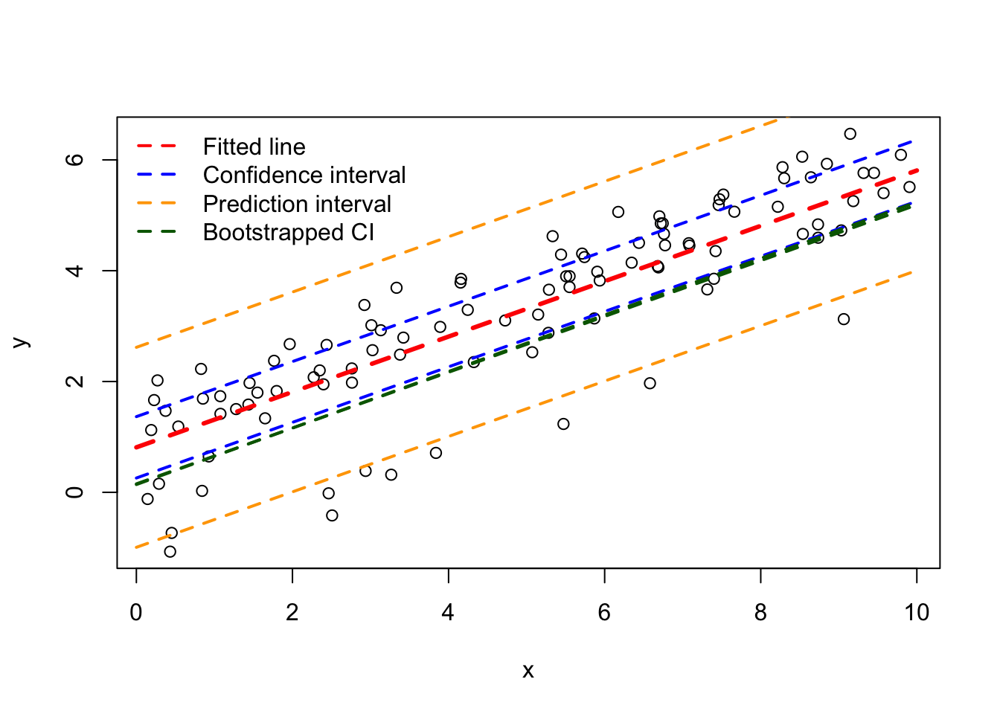
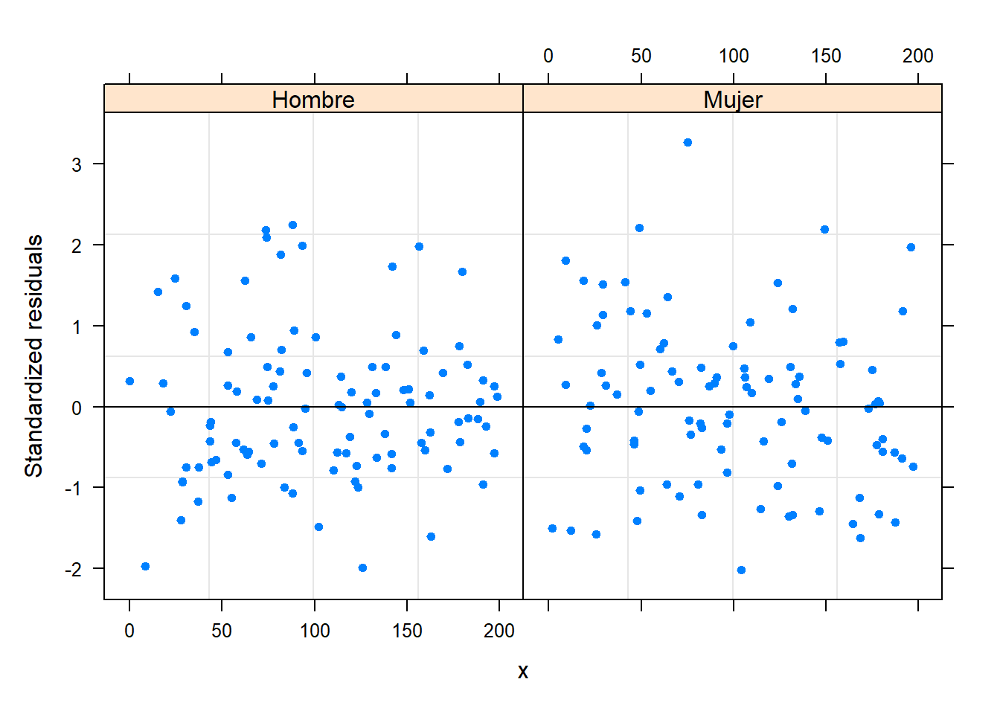

12 Modelando la heterocedasticidad
En este capítulo se mostrará como usar el paquete nlme de Pinheiro, Bates, and R-core (2021) para modelar heterocedasticidad.
12.1 Opciones para modelar la varianza
En la siguiente tabla se muestran las diferentes opciones para modelar la varianza \(\sigma^2_y\) de la variable respuesta \(Y\).
| Clase | Modelo |
|---|---|
| varFixed | \(\sigma^2_y = \sigma^2 x_{ij}\) |
| varIdent | \(\sigma^2_y = \sigma^2 \delta^2_{Sij}\) |
| varPower | \(\sigma^2_y = \sigma^2 |x_{ij}|^{2\delta}\) |
| varExp | \(\sigma^2_y = \sigma^2 e^{2 \delta x_{ij}}\) |
| varConstPower | \(\sigma^2_y = \sigma^2 (\delta_1 + |x_{ij}|^{\delta_2})^2\) |
| varComb |
12.2 varFixed
En esta sección vamos a simular datos de un modelo lineal mixto en el cual \(\sigma^2_y\) dependa de una variable cuantitativa para luego estimar los parámetros del modelo.
Ejemplo: \(\sigma^2_y\) dependiendo de una variable cuantitativa
En este ejemplo vamos a simular observaciones \(n_i=10\) observaciones para \(G=20\) grupos (en total 200 obs) que tengan la estructura mostrada abajo. En este ejemplo la varianza \(\sigma^2_y\) no es constante, depende de la varianza general \(\sigma^2=9\) y de la variable \(X\), es decir \(\sigma^2_y = 9 \, x_{ij}\).
\[\begin{align*} y_{ij} | b_0 &\sim N(\mu_{ij}, \sigma^2_y) \\ \mu_{ij} &= 4 - 6 x_{ij} + b_{0i} \\ \sigma^2_y &= 9 \times x_{ij} \\ b_{0} &\sim N(0, \sigma^2_{b0}=64) \\ x_{ij} &\sim U(0, 200) \end{align*}\]
El vector de parámetros de este modelo es \(\boldsymbol{\Theta}=(\beta_0=4, \beta_1=-6, \sigma=3, \sigma_{b0}=8)^\top\).
El código para simular las 500 observaciones se muestra a continuación. Observe que se fijó la semilla para que el lector pueda replicar el ejemplo y obtener los mismos resultados.
ni <- 10
G <- 20
nobs <- ni * G
grupo <- factor(rep(x=1:G, each=ni))
obs <- rep(x=1:ni, times=G)
set.seed(123)
x <- runif(n=nobs, min=0, max=200)
set.seed(123)
b0 <- rnorm(n=G, mean=0, sd=sqrt(64)) # Intercepto aleatorio
b0 <- rep(x=b0, each=ni) # El mismo intercepto aleatorio pero repetido
media <- 4 - 6 * x + b0
sigma2_y <- 9 * x
set.seed(123)
y <- rnorm(n=nobs, mean=media, sd=sqrt(sigma2_y))
datos <- data.frame(obs, grupo, x, y)Primero vamos a ajustar un modelo fit0 que asume varianza \(\sigma^2_y\) constante para compararlo con el modelo fit1 que si modela la varianza en función de la covariable \(X\).
library(nlme)
fit0 <- lme(y ~ x, random = ~ 1 | grupo, data=datos)Vamos a explorar el gráfico de residuales versus la covariable \(X\) para ver si hay un indicio de heterocedasticidad (varianza no costante).
plot(fit0, resid(., type = "p") ~ x, abline = 0, pch=20)
De la figura anterior vemos claramente una forma de “corneta”, cerrada a izquierda y abierta a la derecha, esto es un indicio de que se debe modelar la varianza \(\sigma^2_y\).
El siguiente modelo permite que la varianza \(\sigma^2_y\) sea función de \(X\) usando una estructura varFixed.
fit1 <- lme(y ~ x, random = ~ 1 | grupo, weights=varFixed(~ x), data=datos)A continuación repetimos la misma figura de residuales anterior. De esta figura logramos ver que se eliminó el patrón de “corneta” observado antes.
plot(fit1, resid(., type = "p") ~ x, abline = 0, pch=20)
La función summary se puede usar sobre el objeto fit1 para obtener una tabla de resumen, a continuación se ilustra el uso y la salida de summary.
summary(fit1)## Linear mixed-effects model fit by REML
## Data: datos
## AIC BIC logLik
## 1886.683 1899.836 -939.3417
##
## Random effects:
## Formula: ~1 | grupo
## (Intercept) Residual
## StdDev: 7.182138 2.841913
##
## Variance function:
## Structure: fixed weights
## Formula: ~x
## Fixed effects: y ~ x
## Value Std.Error DF t-value p-value
## (Intercept) 4.262272 2.7075258 179 1.57423 0.1172
## x -5.994199 0.0293592 179 -204.16788 0.0000
## Correlation:
## (Intr)
## x -0.59
##
## Standardized Within-Group Residuals:
## Min Q1 Med Q3 Max
## -2.44109665 -0.63620797 -0.05268718 0.61698526 3.36214890
##
## Number of Observations: 200
## Number of Groups: 20Según el resultado anterior \(\hat{\boldsymbol{\Theta}}=(\hat{\beta}_0=4.2623, \hat{\beta}_1=-5.9942, \hat{\sigma}=2.8419, \hat{\sigma}_{b0}=7.1821)^\top\) mientras que el vector real de parámetros es \(\boldsymbol{\Theta}=(\beta_0=4, \beta_1=-6, \sigma=3, \sigma_{b0}=8)^\top\).
En el código de abajo usamos la función anova.lme para comparar los dos modelos anteriores. Del resultado vemos que ambos modelos tienen 4 parámetros y que el modelo fit1 tiene el menor valor de BIC y mayor valor de verosimilitud, esto indica que el modelo fit1 es más apropiado para modelar los datos.
anova(fit0, fit1)## Model df AIC BIC logLik
## fit0 1 4 1912.618 1925.771 -952.3089
## fit1 2 4 1886.683 1899.836 -939.341712.3 varIdent
En esta sección vamos a simular datos de un modelo lineal mixto en el cual \(\sigma^2_y\) dependa de una variable cualitativa para luego estimar los parámetros del modelo.
Ejemplo: \(\sigma^2_y\) dependiendo de una variable cualitativa
En este ejemplo vamos a simular observaciones \(n_i=10\) observaciones para \(G=20\) grupos (en total 200 obs) que tengan la estructura mostrada abajo. En este ejemplo la varianza \(\sigma^2_y\) no es constante, depende de la varianza general \(\sigma^2=9\) y de la variable sexo, para los hombres la varianza será \(\sigma^2_y = 9 * \delta_H\) y para las mujeres la varianza será \(\sigma^2_y = 9 * \delta_M\). Los valores de \(\delta\) a usar en la simulación son \(\delta_H=1\) y \(\delta_M=6\), esto para hacer que las observaciones de la mujeres tengan mayor variabilidad.
El modelo de interés se puede resumir de la siguiente manera.
\[\begin{align*} y_{ij} | b_0 &\sim N(\mu_{ij}, \sigma^2_y) \\ \mu_{ij} &= 4 - 6 x_{ij} + b_{0i} \\ \text{Hombre} \quad \sigma^2_y &= 9 \times 1 \\ \text{Mujer} \quad \sigma^2_y &= 9 \times 6 \\ b_{0} &\sim N(0, \sigma^2_{b0}=64) \\ x_{ij} &\sim U(0, 200) \end{align*}\]
El vector de parámetros de este modelo es \(\boldsymbol{\Theta}=(\beta_0=4, \beta_1=-6, \sigma=3, \delta_H=1, \delta_H=6, \sigma_{b0}=8)^\top\).
El código para simular las 500 observaciones se muestra a continuación. Observe que se fijó la semilla para que el lector pueda replicar el ejemplo y obtener los mismos resultados.
ni <- 10
G <- 20
nobs <- ni * G
grupo <- factor(rep(x=1:G, each=ni))
set.seed(123)
sexo <- sample(x=c("Hombre", "Mujer"), size=nobs, replace=TRUE)
obs <- rep(x=1:ni, times=G)
set.seed(123)
x <- runif(n=nobs, min=0, max=200)
set.seed(123)
b0 <- rnorm(n=G, mean=0, sd=sqrt(64)) # Intercepto aleatorio
b0 <- rep(x=b0, each=ni) # El mismo intercepto aleatorio pero repetido
media <- 4 - 6 * x + b0
delta_h <- 1
delta_m <- 6
sigma2_y <- ifelse(sexo == "Hombre", 9 * delta_h^2, 9 * delta_m^2)
set.seed(123)
y <- rnorm(n=nobs, mean=media, sd=sqrt(sigma2_y))
datos <- data.frame(obs, grupo, sexo, x, y)Primero vamos a ajustar un modelo fit0 que asume varianza \(\sigma^2_y\) constante para compararlo con el modelo fit1 que si modela la varianza en función de la covariable sexo.
library(nlme)
fit0 <- lme(y ~ x, random = ~ 1 | grupo, data=datos)Vamos a explorar el gráfico de residuales versus la covariable sexo para ver si hay un indicio de heterocedasticidad (varianza no costante).
plot(fit0, resid(., type = "p") ~ x | sexo, abline = 0, pch=20)De la figura anterior vemos claramente los residuales no se comportan igual para hombres y mujeres, esto es un indicio de que se debe modelar la varianza \(\sigma^2_y\) teniendo en cuenta el sexo.
El siguiente modelo permite que la varianza \(\sigma^2_y\) sea función del sexo usando una estructura varIdent.
fit1 <- lme(y ~ x, random = ~ 1 | grupo, weights = varIdent(form = ~ 1| sexo),
data=datos)A continuación repetimos la misma figura de residuales anterior. De esta figura logramos ver que se eliminó el patrón observado antes.
plot(fit1, resid(., type = "p") ~ x | sexo, abline = 0, pch=20)
La función summary se puede usar sobre el objeto fit1 para obtener una tabla de resumen, a continuación se ilustra el uso y la salida de summary.
summary(fit1)## Linear mixed-effects model fit by REML
## Data: datos
## AIC BIC logLik
## 1413.453 1429.895 -701.7267
##
## Random effects:
## Formula: ~1 | grupo
## (Intercept) Residual
## StdDev: 7.844797 2.62634
##
## Variance function:
## Structure: Different standard deviations per stratum
## Formula: ~1 | sexo
## Parameter estimates:
## Hombre Mujer
## 1.000000 6.725537
## Fixed effects: y ~ x
## Value Std.Error DF t-value p-value
## (Intercept) 3.917506 1.8639114 179 2.1018 0.037
## x -5.990032 0.0054473 179 -1099.6411 0.000
## Correlation:
## (Intr)
## x -0.305
##
## Standardized Within-Group Residuals:
## Min Q1 Med Q3 Max
## -2.01600189 -0.58592550 -0.02227228 0.49152791 3.26640788
##
## Number of Observations: 200
## Number of Groups: 20Según el resultado anterior \(\hat{\boldsymbol{\Theta}}=(\hat{\beta}_0=3.92, \hat{\beta}_1=-5.99, \hat{\sigma}=2.63, \hat{\delta}_H=1, \hat{\delta}_M=6.73, \hat{\sigma}_{b0}=7.84)^\top\) mientras que el vector real de parámetros es \(\boldsymbol{\Theta}=(\beta_0=4, \beta_1=-6, \sigma=3, \delta_H=1, \delta_H=6, \sigma_{b0}=8)^\top\).